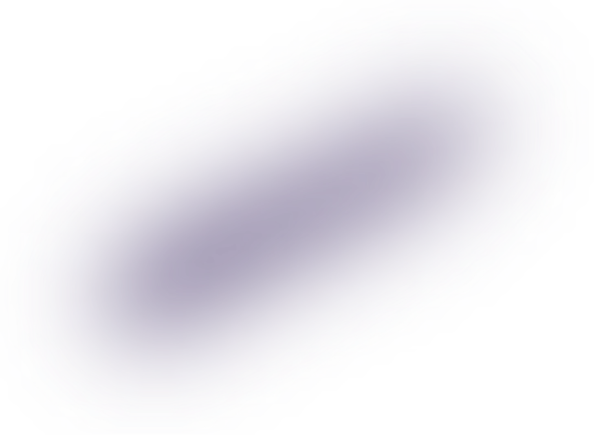
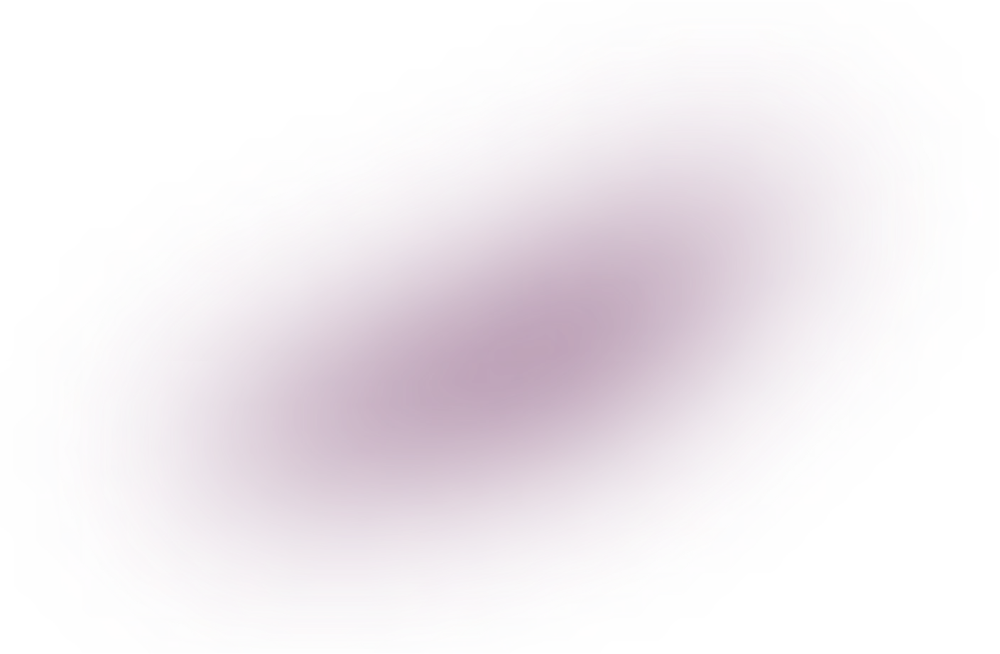

Rockstar has confirmed that the GTA VI soundtrack is coming to vinyl. The announcement landed on the Newswire together with the cover art you see above — the neon “The Album” script over a Vice City sunset, the same palette as the key art.
We checked the post against the official store listing before publishing. Both match, so this one goes out with a Confirmed label.
What is confirmed
What we are still waiting for
Rockstar has not published a full tracklist for the record, the number of discs or a shipping date. We will update this story the moment any of that appears on an official channel — not before.
If a store asks you to pre-order the GTA VI vinyl and it is not the Rockstar Store, close the tab. We found three copycat pages in the first hour.
moonrock445, NeonBay
How to order safely
- Open the store from the link in the official Newswire post, not from ads or DMs.
- Check the domain before you enter any payment details.
- Ignore “early access” bundles — none have been announced.
Seen a pre-order page that looks off? Send it to us on Telegram and we will check it.